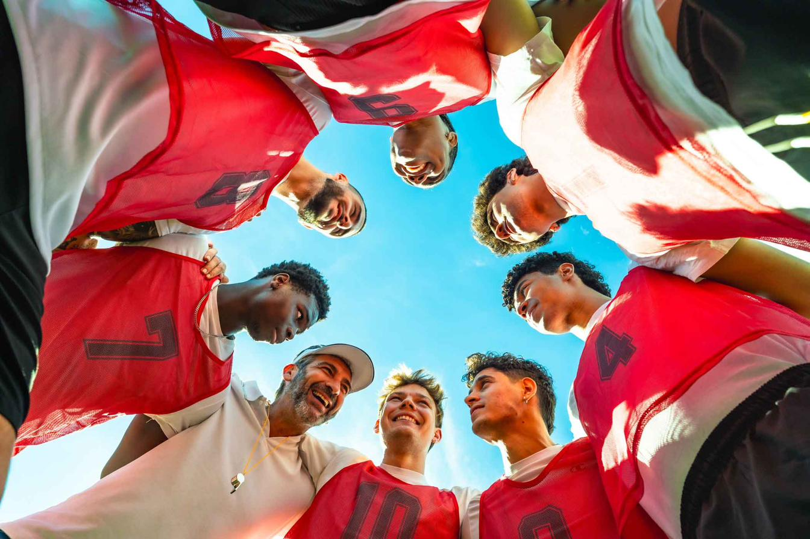
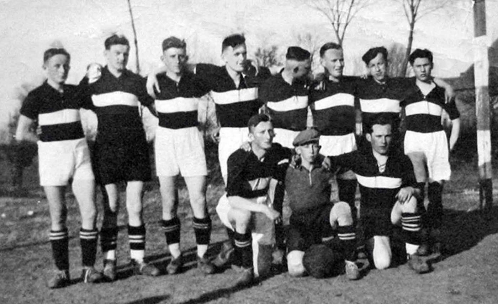

Willkommen im Club!
Kontakt?Schreibt uns!

B-Jugend
Wir trainieren dienstags und donnerstags um 17:45 - 19:15 Uhr auf dem Sportplatz in Dabergotz. Robert Schröder ist euer Trainer.
Wir sind Doublesieger in der Saison 2024/2025, Pokalsieger und Kreismeister. Mit dir erreichen wir noch mehr. Willkommen im Club!
Schreibt uns!
Ü 35 – Altherren
Wir trainieren mittwochs um 18:30 Uhr auf dem Sportplatz in Dabergotz. Patrick Renner ist euer Trainer.
Der Spaß und die Gemeinschaft stehen bei uns im Vordergrund. Mit dir haben wir noch mehr Freude am Sport. Willkommen im Club!
Schreibt uns!

Vereinsgeschichte
In den 1920er Jahren entstanden in Deutschland viele Sportvereine auf dem Land, meist gegründet von Turnern oder Radfahrern. Im Juni 1929 gründeten sportinteressierte Dabergotzer den TuS Dabergotz 1929. Anfang der dreißiger Jahre schwappte die Fußballbegeisterung der Deutschen von den Städten auf die Dörfer über. Auch in Dabergotz kamen immer mehr Fußballinteressierte zusammen.
-
1929
Gründung
-
1932
erstes Fußballteam & erster Sportplatz
-
1947
Wiederaufnahme Spielbetrieb sowie aktive Frauen-, Volkstanz- und Gymnastikgruppe
-
1953
Kreismeisterschaft und Aufstieg in Bezirksklasse
-
1976
neuer Sportplatz hinter dem alten Spielfeld
-
1990er Jahre
Vereinsgelände erweitert, Tribüne und Flutlichtanlage
Fanshop
Unsere Hingucker
Durchstöbere unsere Highlights im Fanshop und finde dein neues Lieblingsteil im Vereinsdesign.